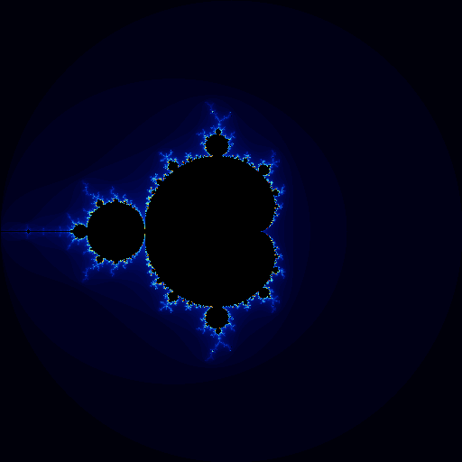

Generating Mandelbrot Set Images in C
As a beginner in C programming, I decided to dive into generating fractal images. Specifically, I wrote a program to create an image of the Mandelbrot set. The Mandelbrot set is a famous fractal that reveals intricate and beautiful patterns when visualized, making it a great project for learning more about complex numbers, loops, and image processing.
The Program
The program is written in C and utilizes the
stb_image_write.h library to generate PNG images. Here's a
quick overview of how the program works:
- The Mandelbrot set is generated by iterating over complex numbers and checking if they diverge.
- Each pixel in the image corresponds to a complex number, and the color of each pixel is determined by the number of iterations required for the value to diverge.
- The program maps the iteration count to a color gradient, creating a visually appealing representation of the Mandelbrot set.
Key Parts of the Code
The program defines several key components:
Complexstruct to represent complex numbers.- Functions for basic complex number operations like addition and multiplication.
-
A
get_colorfunction to map iteration counts to RGB colors. - A loop that iterates over each pixel, computes its corresponding complex number, and determines its color.
Building and Running the Program
To compile and run the program, you can use the following commands:
gcc -o mandelbrot main.c -Istb -lm
./mandelbrot
This will generate a mandelbrot.png image in the current
directory. You can adjust the image resolution and other parameters in
the code by modifying the #define values.
What I Learned
This project taught me a lot about handling complex numbers, working
with image files in C, and using external libraries. It was also a great
way to practice memory management with malloc and
free.
Next Steps
In the future, I'd like to experiment with different fractals and explore optimizations to make the image generation faster. I also plan to explore more advanced topics like multithreading to improve performance.
Overall, this was a fun and educational project that gave me a deeper appreciation for both C programming and the beauty of fractals!